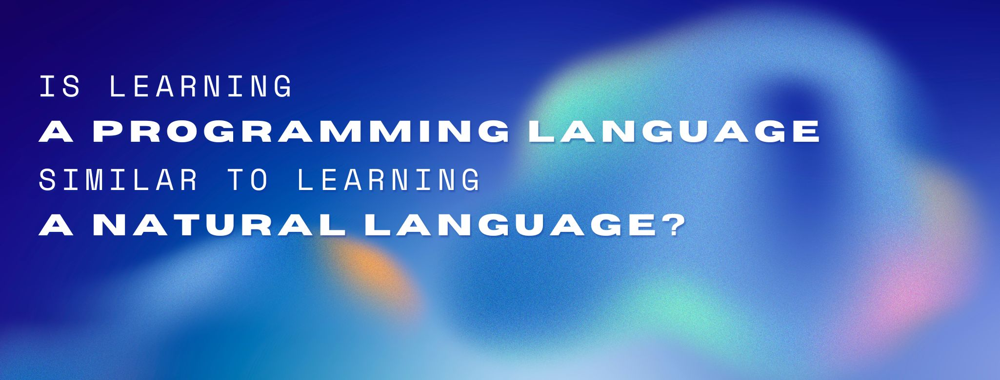

Tags: language, AI, linguistics

Programming languages are systems of notation used for writing computer programs (e.g., Java), whereas natural languages are systems of communication that have developed naturally in human communities (e.g., French). Despite both of them being languages, little is known about whether learning a programming language is similar to learning a natural language.
Traditionally, learning programming languages has been associated with mathematical skills. In fact, this is what happens in most STEM degrees, where students are required to have a solid background in algebra, calculus, and other branches of mathematics. However, the relationship between language aptitude and the learning of programming languages has been understudied so far.
A study conducted in the 1980's examined a group of students who were taking a course to learn COBOL (a programming language used in business and finance). The researcher analyzed whether there was a correlation between the students' performance in this introductory class and their mathematical and language aptitude measured via two different tests. The first test looked at students' knowledge of COBOL syntactic rules, whereas the second test looked at students' knowledge of COBOL coding logic. The researcher found that language aptitude was strongly correlated with the students' performance on the syntactic test, while the mathematical aptitude was strongly correlated with the students' performance on the coding logic test. Based on these results, it was concluded that both language skills and mathematical skills were crucial for learning programming languages, and not just mathematical skills, aspreviously thought.
Another more recent study conducted by a group of researchers at the University of Washington examined a group of students enrolled in an online Python course on Codecademy. It was an introductory level course targeted to new programmers and consisted of ten 45-minute sessions. Here, researchers looked at three main performance measures: learning rate, programming accuracy, and declarative knowledge. Researchers analyzed whether there was a correlation between these measures and language aptitude, numeracy, and fluid reasoning abilities. What they found was that these three predictors correlated positively with the measures under study. Furthermore, language aptitude was more strongly correlated with the measures than numeracy skills. Drawing from these findings, it could be claimed that learning natural languages should be emphasized among people who want to learn a programming language, since those language skills would be an advantage for them.
Looking at these research studies, some might say that STEM degrees should not favor math courses over language courses. However, the research studies conducted so far have some weaknesses. For example, both studies examined people who were taking introductory-level programming courses. It is understandable that these initial lessons emphasized the basic rules of the programming languages (e.g., syntax), which might explain why language skills were highly correlated. Right now, we don't have any studies examining these correlations in the longer-term. That is, it may be the case that upper-level courses focus more on algorithmic logic and less on basic syntactic rules, which may lead to a higher correlation with mathematical skills instead of with language skills.
Another weakness of the second study in particular is that it tested a programming language which is highly readable (Python). This means that someone without a strong technical background can read a simple line of code by just knowning how to speak English. Other programming languages tend to be less transparent, which might have led to a different result.
The fact that the studies have some weaknesses does not mean that their results are not true, but are simply not generalizable to other situations. Thus, more studies are needed in order to better understand how learning programming languages is similar to learning natural languages.